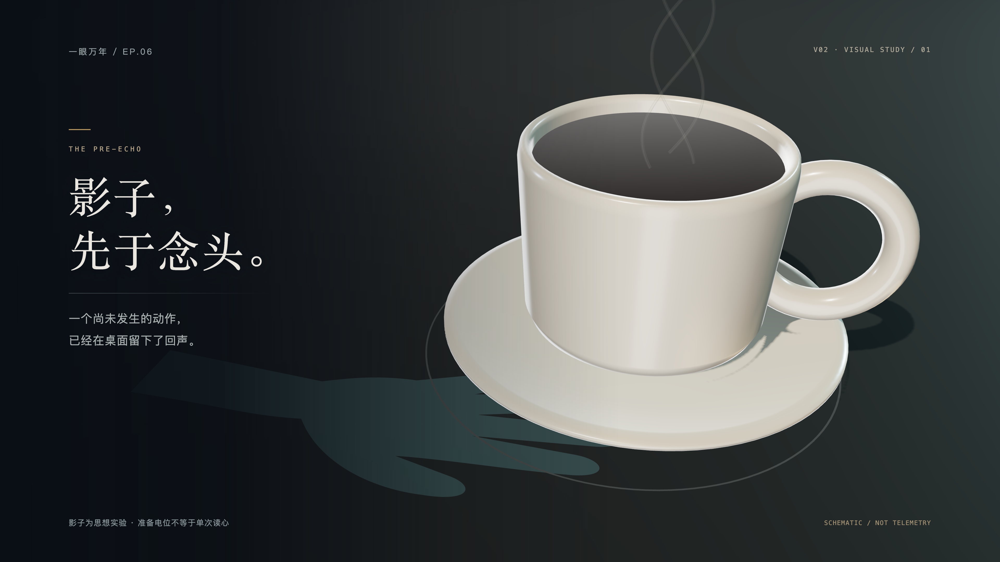

<!doctype html>
<html lang="zh-CN"><meta charset="utf-8"><meta name="viewport" content="width=device-width,initial-scale=1">
<title>主权心印 · v02 视觉样片</title>
<style>
*{box-sizing:border-box}body{margin:0;background:#101318;color:#e5e2da;font:16px/1.6 -apple-system,BlinkMacSystemFont,"PingFang SC",sans-serif}main{max-width:1440px;margin:auto;padding:48px 40px 72px}header{display:flex;justify-content:space-between;align-items:end;margin-bottom:32px}small{font:11px/1.6 ui-monospace,monospace;letter-spacing:3px;color:#aa9675}h1{font-family:"Songti SC",serif;font-size:36px;font-weight:400;letter-spacing:2px;margin:8px 0}p{color:#939ca1;font-size:14px;margin:0}video{display:block;width:100%;background:#080c12;border:1px solid #2c3239}section{margin-top:48px}.bar{display:flex;align-items:center;justify-content:space-between;gap:16px;margin-bottom:18px}h2{font-size:17px;font-weight:400;letter-spacing:2px;margin:0}nav{display:flex;gap:8px}button{border:1px solid #30373e;background:transparent;color:#9ea8ad;padding:8px 18px;border-radius:2px;cursor:pointer;font:inherit;font-size:13px}button[aria-selected=true]{background:#c4ab7e;border-color:#c4ab7e;color:#151719}figure{margin:0}img{width:100%;display:block;background:#0b1017}figcaption{font-size:12px;color:#8f999d;margin-top:10px}footer{border-top:1px solid #30363c;margin-top:44px;padding-top:20px;display:flex;justify-content:space-between;font-size:12px;color:#7d898f}a{color:#bfab85;text-decoration:none}@media(max-width:700px){main{padding:25px 16px}header{display:block}h1{font-size:28px}.bar{align-items:start;flex-direction:column}nav{gap:6px}button{padding:7px 12px}footer{display:block}}
</style>
<main>
 <header><div><small>EP.06 / VISUAL STUDY</small><h1>主权心印 · v02</h1><p>静帧看构图与材质，十二秒样片看闭合动作与声音。</p></div><small>GRAPHITE · IVORY · GOLD</small></header>
 <video controls preload="metadata" poster="review/crystal-4k.png" playsinline src="review/crystal-proof-12s-1080p.mp4"></video>
 <section><div class="bar"><h2>三个关键画面</h2><nav role="tablist" aria-label="关键静帧"><button role="tab" aria-selected="true" data-image="coffee" data-title="01 · 影子先于念头">咖啡与影子</button><button role="tab" aria-selected="false" data-image="choice" data-title="03 · 温柔的斜坡">选择地形</button><button role="tab" aria-selected="false" data-image="crystal" data-title="04 · 主权心印">主权晶体</button></nav></div><figure><figcaption id="caption">01 · 影子先于念头 / 3840 × 2160</figcaption></figure></section>
 <footer><span>文本、旁白、音乐和数学模型沿用 v01；此页用于确认新的视觉方向。</span><a id="download" href="review/coffee-4k.png" download>下载当前 4K 静帧 ↗</a></footer>
</main>
<script>
for(const button of document.querySelectorAll('button[data-image]'))button.addEventListener('click',()=>{
  for(const item of document.querySelectorAll('button[data-image]'))item.setAttribute('aria-selected',String(item===button));
  const url=`review/${button.dataset.image}-4k.png`;
  document.querySelector('#still').src=url;document.querySelector('#still').alt=button.textContent;
  document.querySelector('#caption').textContent=`${button.dataset.title} / 3840 × 2160`;document.querySelector('#download').href=url;
});
</script></html>
